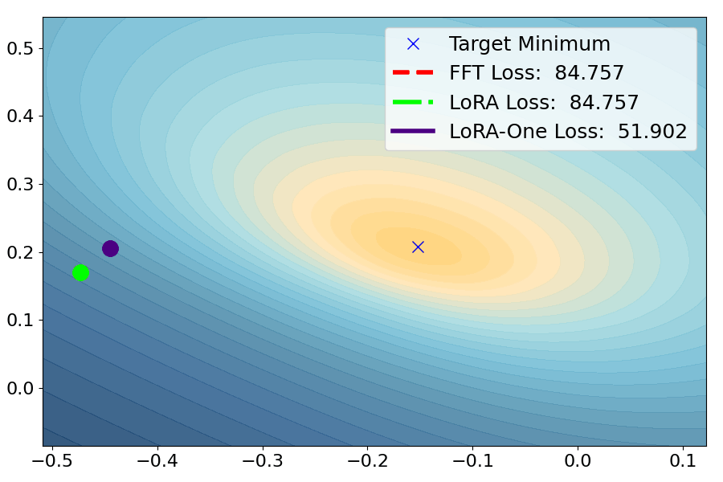

Yuanhe Zhang
I am a PhD student in Statistics at University of Warwick, supervised by
Dr. Fanghui Liu
and
Prof. Chenlei Leng.
I am interested in theory-grounded algorithm design and theoretical analysis of the training dynamics of neural networks.
Email: firstname.lastname@warwick.ac.uk
Publications

Yuanhe Zhang, Fanghui Liu, Yudong Chen
International Conference on Machine Learning (ICML), 2025 (Spotlight, to appear).
[PDF] [Code] [Bibtex]
@misc{zhang2025loraoneonestepgradientsuffice,
title={LoRA-One: One-Step Full Gradient Could Suffice for Fine-Tuning Large Language Models,
Provably and Efficiently},
author={Yuanhe Zhang and Fanghui Liu and Yudong Chen},
year={2025},
eprint={2502.01235},
archivePrefix={arXiv},
primaryClass={stat.ML},
url={https://arxiv.org/abs/2502.01235},
}
Quasi-Bayes meets Vines
David Huk, Yuanhe Zhang, Ritabrata Dutta, Mark Steel
Advances in Neural Information Processing Systems (NeurIPS), 2024.
[PDF]
[Bibtex]
@article{huk2024quasi,
title={Quasi-Bayes meets Vines},
author={Huk, David and Zhang, Yuanhe and Dutta, Ritabrata and Steel, Mark},
journal={Advances in Neural Information Processing Systems},
volume={37},
pages={40359--40392},
year={2024}
}
Education
-
PhD in Statistics, University of Warwick
Supervised by Dr. Fanghui Liu and Prof. Chenlei Leng
2024-Current -
BSc MMathStat, University of Warwick
2020-2024